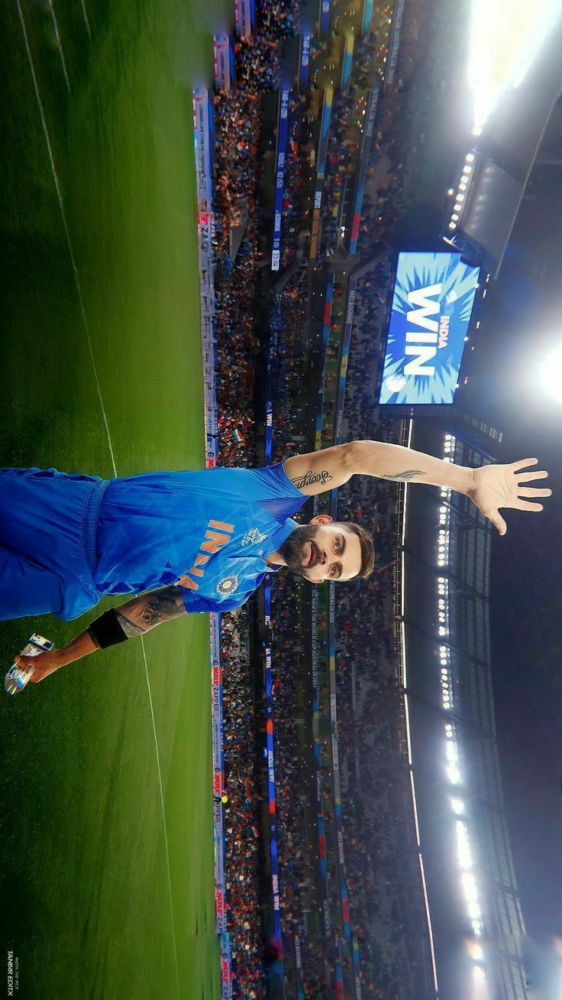

Virat Kohli

Career
Virat Kohli is an Indian cricketer who plays for India national cricket team.He was born in Delhi, India on
November 5, 1988.Virat is the first player in ICC cricket history to win all 3 ICC awards in a single year-
ICC
ODI player of the year, ICC Test player of the year and ICC Player of the year award in 2018.
Virat Kohli first came into the limelight in 2008, when he led the Indian U-19 cricket team to victory in
2008
U-19 Cricket World Cup He soon made his debut for the Indian team in August 2008. during a ODI match against
in
Sri Lanka.
Virat also became one of the valuable Indian captain in Test cricket with 27 test wins, 12 overseas test
wins
and highest winning percentage as captain in both Tests and ODIs.
Kohli was ranked eighth in ESPN's list of world's most famous sportspeople in 2016. Virat is the only
current
player to have a stand named after him in Delhi Firoz Shah Kotla stadium to honour hisimmaculate
contributions
to Indian cricket.
Personal life

He started dating Bollywood actress Anushka Sharma in 2013.
They got married on 11 December 2017 in Florence,Italy.
The couple had their first child, a daughter in January 2021.
Virat Kohli plays for Royal Challengers Bangalore in IPL in India
Virat Kohlis Batting cricket ICC rankings as of 2023.
He is rated as one of India's best cricket captains in terms of wins and winning percentages.
He is ranked the 4th best captain for India if all time.
He is the highest run scorer in T20 cricket for all time, the 5th best in ODI cricket and 28th best in
Test's
for
all time as of 2023.
National honours
- 2013 - Arjuna Award, second highest sporting honour.
- 2017 - Padma Shri Ribbon.svg Padma Shri , India's fourth highest civilian award.
- 2018 - Major Dhyan Chand Khel Ratna Award, India's highest sporting honour.
Sporting honours
- Sir Garfield Sobers Trophy (ICC Men's Cricketer of the Decade): 2011–2020 Sir Garfield Sobers Trophy (ICC Cricketer of the Year): 2017,[490] 2018
- ICC ODI Player of the Year: 2012,2017,2018
- ICC Test Player of the Year: 2018
- ICC ODI Team of the Year: 2012,2014, 2016 (captain),2017 (captain),2018 (captain),2019 (captain)
- ICC Test Team of the Year: 2017 (captain),2018 (captain),2019 (captain)
- ICC Men's T20I Team of the Year: 2022
- ICC Spirit of Cricket: 2019
- ICC Men's ODI Cricketer of the Decade: 2011–2020
- ICC Men's Test Team of the Decade: 2011–2020 (captain)
- ICC Men's ODI Team of the Decade: 2011–2020
- ICC Men's T20I Team of the Decade: 2011–2020
- Polly Umrigar Award for International Cricketer of the Year: 2011–12, 2014–15, 2015–16, 2016–17, 2017–18
- Wisden Leading Cricketer in the World: 2016, 2017, 2018
- ICC Men's Player of the Month: October 2022
- CEAT International Cricketer of the Year: 2011–12, 2013–14,[505] 2017– 18, 2018–19
- Indian Premier League Orange Cap for most runs: 2016
- Barmy Army – International Player of Year: 2017, 2018
- ESPNcricinfo – ODI Batting Performance of the Year: 2012
- People's Choice Awards India For Favourite Sportsperson: 2012
- GQ Sportsman of the year: 2013
- CNN-News18 Indian of the Year: 2017
- Delhi & District Cricket Association (DDCA) renamed a stand after Kohli at Feroz Shah Kotla, Delhi.